MILLING VS DRILLING
Definition
Milling and drilling are both subtractive machining processes, but they differ significantly in motion, flexibility, and applications within precision engineering.
Milling
Milling is a subtractive machining process that removes material using a rotating cutting tool. The cutter moves across multiple axes (X, Y, and Z), allowing CNC milling machines to produce complex shapes with high precision and tight tolerances.
Drilling
Drilling is a machining process focused on creating cylindrical holes using a rotating drill bit. The cutting motion is primarily vertical, making CNC drilling machines highly efficient for producing accurate holes at various diameters and depths.
Key Differences
Cutting Technique
Drilling operates along a single vertical axis and is limited to hole-making. Milling, on the other hand, is multi-directional, enabling the cutter to move laterally, diagonally, and vertically to form complex shapes.
Capabilities
Drilling is best suited for repetitive hole production. Milling supports a wider range of operations, from surface finishing to complex geometries
Advantages
Milling
- High precision and tight dimensional tolerances
- Multi-axis machining for complex geometries
- Superior surface finish and versatility
Drilling
- Fast and efficient hole production
- Simple machine setup and operation
- Cost-effective for high-volume drilling tasks
Conclusion
Milling and drilling serve different purposes in manufacturing. Drilling excels in speed and efficiency for simpler and straightforward tasks, while Milling offers flexibility, detailed surface finishes, and the ability to produce complex features. The choice depends on geometry, tolerance requirements, and production objectives.
MATERIALS WE WORK WITH
We machine a wide range of metals and engineering plastics to meet diverse performance, durability, and precision requirements. From high-strength alloys to lightweight plastics, our CNC capabilities ensure consistent quality across all materials.
ADVANTAGES & BENEFITS
Explore our services, advantages, and why clients trust us. We deliver precision-engineered, reliable, and scalable solutions for your project needs.
- 🎯 High accuracy and consistent fabrication quality
- ⚡ Faster production with shorter lead times
- ♻ Reduced material waste through precision processes
- 💰 Cost-efficient for repeat and batch production
- 🧩 Capability to produce complex and detailed components
- ✔ Reliable quality control and repeatability
- 👷 Experienced machinists with vast expertise
- 🛠 Advanced CNC equipment and capabilities
- ⏱ Fast lead times and dependable delivery
- 🔧 Custom solutions fit to your requirements
- 💲 Competitive pricing
- ✅ Consistent quality you can rely on
FEATURED PROJECTS
 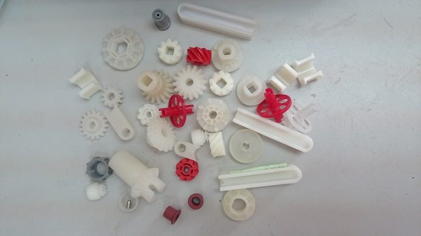
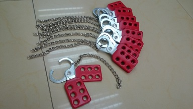
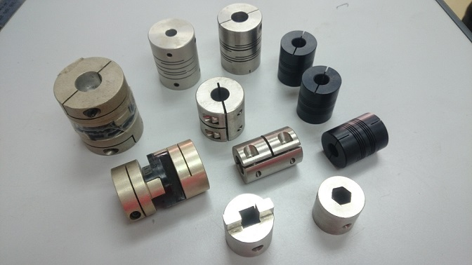
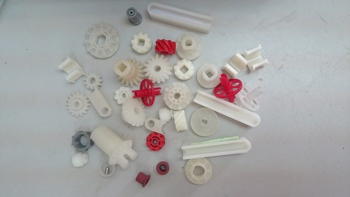
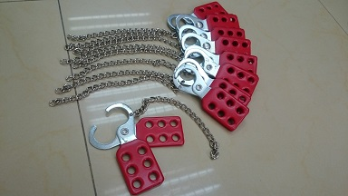
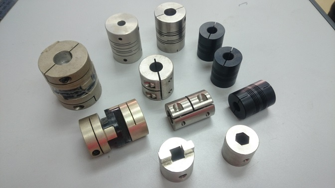
 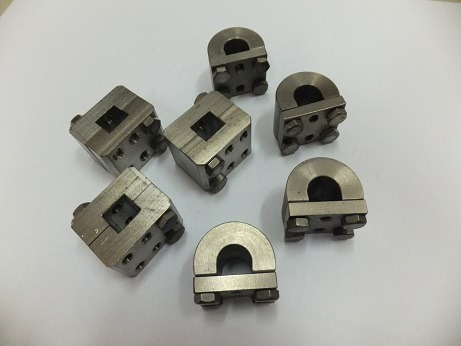
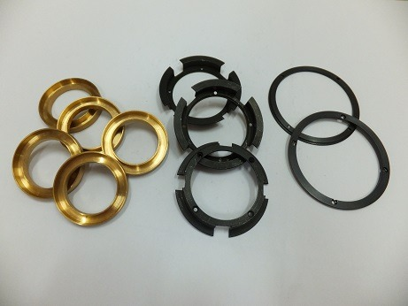
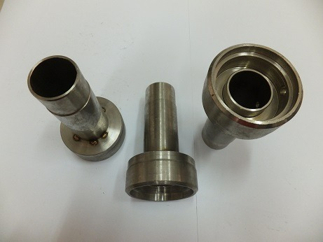
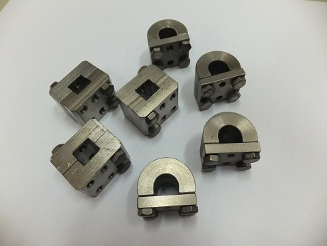
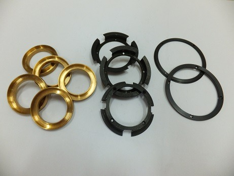
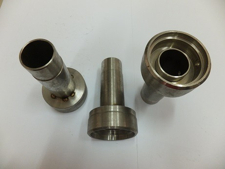